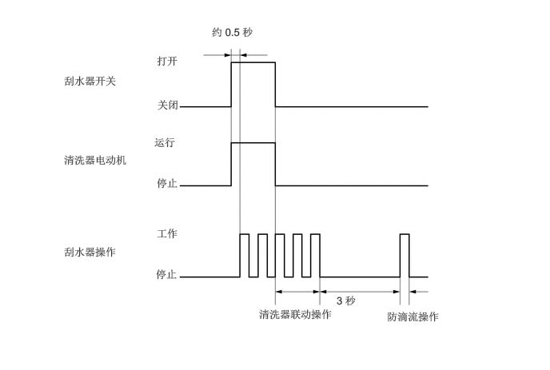
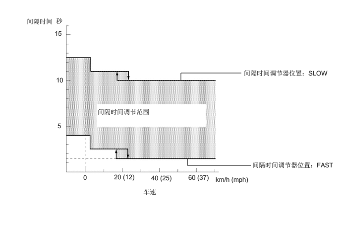
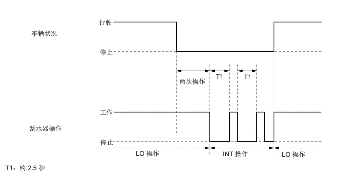
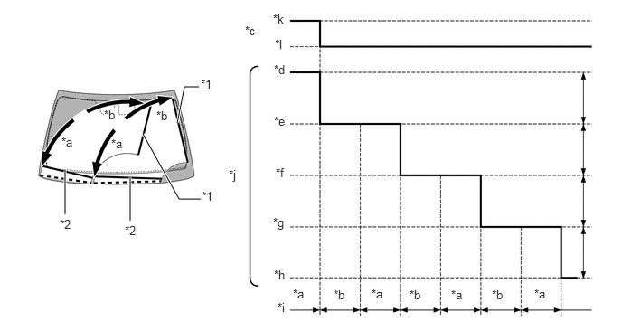

主要零部件的功能
| 零部件 | 功能 |
|---|---|
|
*1：汽油车型 *2：HV 车型 |
|
| 挡风玻璃刮水器开关总成
·
清洗器开关 ·
间歇时间调节器 ·
刮水器控制开关 |
通过主车身 ECU（多路网络车身 ECU）将挡风玻璃刮水器开关总成的位置信号输出至挡风玻璃刮水器电动机总成。 |
| 挡风玻璃刮水器电动机总成
·
刮水器 ECU |
·
根据挡风玻璃刮水器开关总成的位置信号，通过主车身 ECU（多路网络车身 ECU）激活前刮水器。 ·
如果刮水器 ECU 出现故障，则允许通过失效保护功能操作前刮水器。 |
| 挡风玻璃清洗器电动机和泵总成 | 根据挡风玻璃刮水器开关总成的信号通过主车身 ECU（多路网络车身 ECU）激活。 |
| ECM*1 | 发送换档杆位置信号至主车身 ECU（多路网络车身 ECU）。 |
| 混合动力车辆控制 ECU*2 | |
| 组合仪表总成 | 发送车速信号至主车身 ECU（多路网络车身 ECU）。 |
| 主车身 ECU（多路网络车身 ECU） | 接收来自各类传感器和 ECU 的信号并将其发送至挡风玻璃刮水器电动机总成和挡风玻璃清洗器电动机和泵总成。 |
| 转向传感器 | 将挡风玻璃刮水器开关总成的位置信号输出至主车身 ECU（多路网络车身 ECU）。 |
| 中央网关 ECU（网络网关 ECU） | 在总线之间转发数据。 |
功能
带防滴流功能的清洗器联动刮水器
挡风玻璃刮水器开关总成设定在 OFF 位置，且清洗器开关已打开 0.5 秒以上时，刮水器在喷射清洗液的同时开始低速操作。
清洗器开关关闭后，刮水器在低速位置操作 3 次。
如下图所示，清洗器开关打开约 0.5 秒或更长时间且车速约为 7 km/h (4 mph) 或更低时，在该次操作结束后，刮水器将再运行一次。

车速感应、可调时间间隔功能
挡风玻璃刮水器开关总成位于 INT 位置时，根据自动控制调节器位置和车速将刮水器时间间隔控制在 3 个范围。
对各范围的间隔时间能进行无级控制。

车速切换功能
挡风玻璃刮水器开关总成置于 LO 位置且车辆停止时，刮水器操作自动切换为间歇式操作。
车辆停止移动且挡风玻璃刮水器开关总成位于 LO 位置时，刮水器低速运行两次。然后，切换至间隔时间约为 2.5 秒的间歇操作。如果在此间歇式刮水器操作过程中车辆开始行驶，则刮水器自动恢复 LO 操作。此外，车辆停止时，将时间间隔调节器置于 FAST 位置可使刮水器低速操作。

高速/低速平稳切换控制功能
将刮水器自高速切换至低速时，系统在刮水片 3 次向上和 3 次向下扫动后逐步降低刮水器速度。

| *1 | 上反向位置 | *2 | 下反向位置 |
| *a | 向下扫动 | *b | 向上扫动 |
| *c | 挡风玻璃刮水器开关位置 | *d | 高速操作 |
| *e | 第一循环 | *f | 第二循环 |
| *g | 第三循环 | *h | 第四循环（低速操作） |
| *i | 操作方向 | *j | 刮水器刮水速度 |
| *k | Hi | *l | Lo |
服务位置功能
在发动机开关（汽油车型）或电源开关（HV 车型）置于 OFF 位置 45 秒内，通过将刮水器开关移至 MIST 位置 2 秒或更长时间可以将前刮水器设定在服务位置。设定在服务位置时，可以提升前刮水器臂并固定在便于拆卸和安装刮水器橡胶的锁止返回位置，从而防止冬季刮水器刮水片因冰、雪或霜而锁止。
通过将发动机开关（汽油车型）或电源开关（HV 车型）置于 ON (IG) 位置以及在带挡风玻璃刮水器开关置于任一位置时操作前刮水器总成，前刮水器可以从服务位置返回。根据挡风玻璃刮水器开关操作情况运行前刮水器。
前刮水器从服务位置返回时，挡风玻璃刮水器电动机总成低速运行第一圈。通过使挡风玻璃刮水器电动机总成低速运行第一圈，可以将与刮水器臂锁止返回位置接触所造成的发动机罩损坏减至最小。如果刮水器臂接触发动机罩，则在反向运行后挡风玻璃刮水器电动机停止。
如果发动机开关（汽油车型）或电源开关（HV 车型）置于 OFF 位置且刮水器臂位于服务位置，则刮水器或 MIST 无法运行。
失效保护
挡风玻璃刮水器开关总成有失效保护功能，相关开关或传感器出现故障时，该功能执行下表所示的刮水器控制。
| 故障 | 条件 |
|---|---|
| 通信信号故障 | 如果 LIN 通信信号出现故障，控制将继续保持发生故障前生效的相同控制状态。 |
| 挡风玻璃刮水器电动机总成过热 | 如果挡风玻璃刮水器电动机总成温度过高，则其工作速度将根据温度降低。 |
| 在刮水器移动末端附近检测到异物 | 如果刮水器因刮水器移动末端附近的异物停止，则刮水器反向移动。 |
| 在挡风玻璃中央附近检测到异物 | 如果刮水器因刮水器移动中央附近的异物停止，则刮水器停止操作。 |
| 检测到过载 | 如果在刮水器工作期间检测到过载，则降低刮水器速度。负载恢复正常时，刮水器速度恢复正常。 |
| 挡风玻璃刮水器电动机总成电源电压故障 | 如果挡风玻璃刮水器电动机总成电源电压过高或过低，则挡风玻璃停止工作。 |